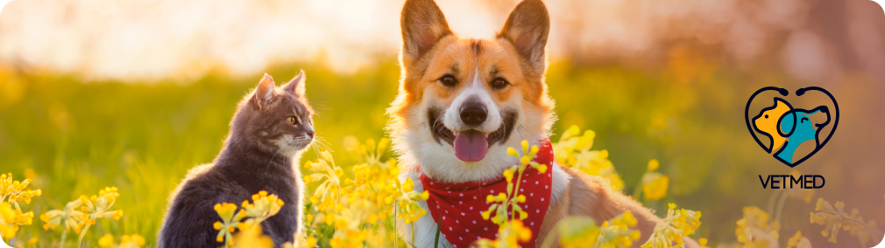
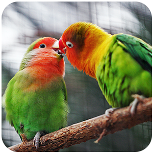
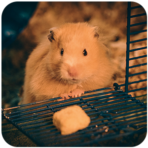

Conheça mais sobre a clínica


Bem-vindo à nossa clínica veterinária, onde nos dedicamos a fornecer cuidados excepcionais para todos os tipos de animais. Aqui na nossa clínica, atendemos desde roedores fofinhos, felinos e cães adoráveis, até animais menos convencionais, como cobras de pequeno porte e aves exóticas. Nossa missão é garantir o bem-estar e a saúde de todos os animais de estimação, independentemente de seu tamanho, espécie ou características únicas.
Na nossa clínica veterinária, temos uma equipe experiente e apaixonada, composta por médicos veterinários altamente qualificados e uma equipe de apoio dedicada. Nossos profissionais possuem conhecimentos abrangentes sobre uma variedade de espécies animais, o que nos permite oferecer serviços abrangentes para todos os nossos pacientes peludos, emplumados ou escamosos.
Acreditamos que cada animal é especial e único, e nos esforçamos para fornecer um atendimento personalizado a cada um deles. Desde exames de rotina e vacinações até cirurgias complexas e tratamentos especializados, nossos serviços são projetados para atender às necessidades individuais de cada animal. Priorizamos o uso de técnicas e equipamentos de ponta para garantir diagnósticos precisos e tratamentos eficazes.

Nossa clínica veterinária também oferece um ambiente acolhedor e tranquilo para que os animais e seus tutores se sintam confortáveis durante as visitas. Sabemos que ir ao veterinário pode ser estressante para alguns animais, por isso nos esforçamos para criar uma atmosfera calma e amigável. Nossos profissionais são cuidadosos e pacientes, garantindo que cada animal receba a atenção e o cuidado que merece.
Além dos cuidados veterinários, também valorizamos a educação e a conscientização dos tutores. Oferecemos orientações sobre cuidados preventivos, nutrição adequada, treinamento e comportamento animal. Estamos comprometidos em fortalecer a relação entre tutores e animais de estimação, proporcionando informações valiosas para promover uma vida saudável e feliz para todos.
Na nossa clínica veterinária, nos orgulhamos de oferecer atendimento excepcional a todos os animais, desde os mais comuns até os mais exóticos. Seja qual for a espécie do seu animal de estimação, estamos aqui para fornecer os melhores cuidados veterinários possíveis. Entre em contato conosco hoje mesmo e marque uma consulta para seu amado animal de estimação. Estamos ansiosos para conhecê-lo e ajudar a promover a saúde e o bem-estar do seu companheiro peludo.